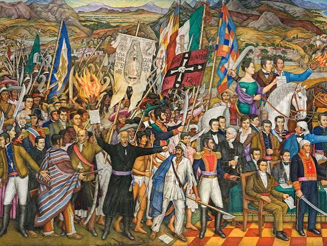
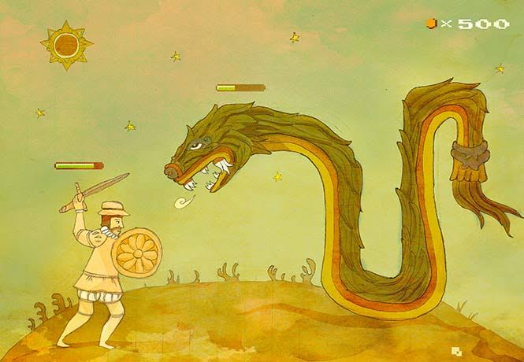
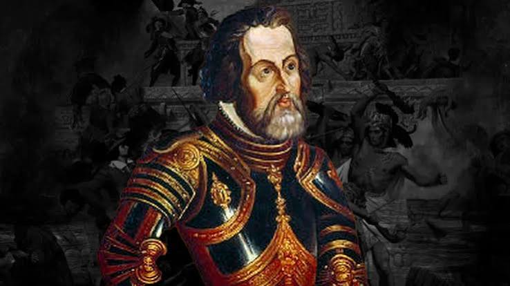
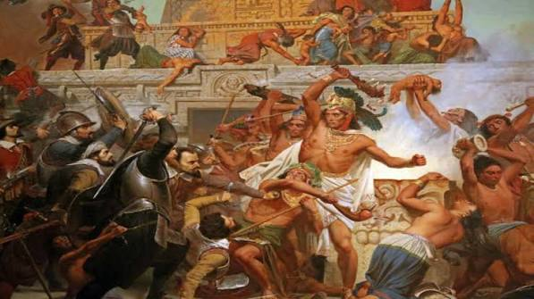

Tras la Noche Triste, Hernán Cortés se reorganizó en Tlaxcala y sumó a miles de aliados indígenas para sitiar Tenochtitlan en mayo de 1521. Los españoles cortaron el agua potable, bloquearon los accesos terrestres y usaron 13 bergantines para impedir la entrada de alimentos por el lago, mientras una epidemia de viruela diezmaba a la población. A pesar de la feroz resistencia liderada por Cuauhtémoc, los conquistadores avanzaron destruyendo la ciudad hasta acorralar a los mexicas en Tlatelolco, donde la captura del tlatoani el 13 de agosto de 1521 selló la rendición definitiva

A su llegada en 1519, Hernán Cortés identificó la fragilidad del Imperio Mexica, el cual basaba su poder en un opresivo sistema tributario que generaba un profundo descontento en la región. El primer gran acercamiento ocurrió con los totonacas de Cempoala. Posteriormente, tras enfrentamientos iniciales, Cortés pactó una alianza crucial con los tlaxcaltecas, los principales enemigos de Tenochtitlán.

El destino de la guerra cambió drásticamente con la llegada involuntaria de agentes biológicos del Viejo Mundo, en especial el virus de la viruela. La población mesoamericana carecía por completo de defensas inmunológicas contra esta enfermedad. La epidemia se propagó ferozmente a finales de 1520, llegando a mermar hasta el 50% de la población indígena de la zona
Tras ser expulsados en la "Noche Triste" (1520), los españoles se reorganizaron en Tlaxcala y planearon un bloqueo absoluto. Sabiendo que Tenochtitlán dependía de las calzadas terrestres y el agua del lago, Cortés ordenó la construcción de 13 bergantines (barcos artillados con cañones) para controlar el Lago de Texcoco.

La resistencia estuvo marcada por la inestabilidad y la valentía de sus líderes tras el apresamiento y muerte de Moctezuma II en 1520. Su sucesor, Cuitláhuac, encabezó la expulsión de los españoles en la Noche Triste, pero gobernó apenas unos meses antes de morir a causa de la viruela. El mando final lo asumió el joven Cuauhtémoc, quien organizó una resistencia feroz, casa por casa, rechazando múltiples ofertas de rendición a pesar del hambre, la falta de agua y la peste interna. Finalmente, el 13 de agosto de 1521,
